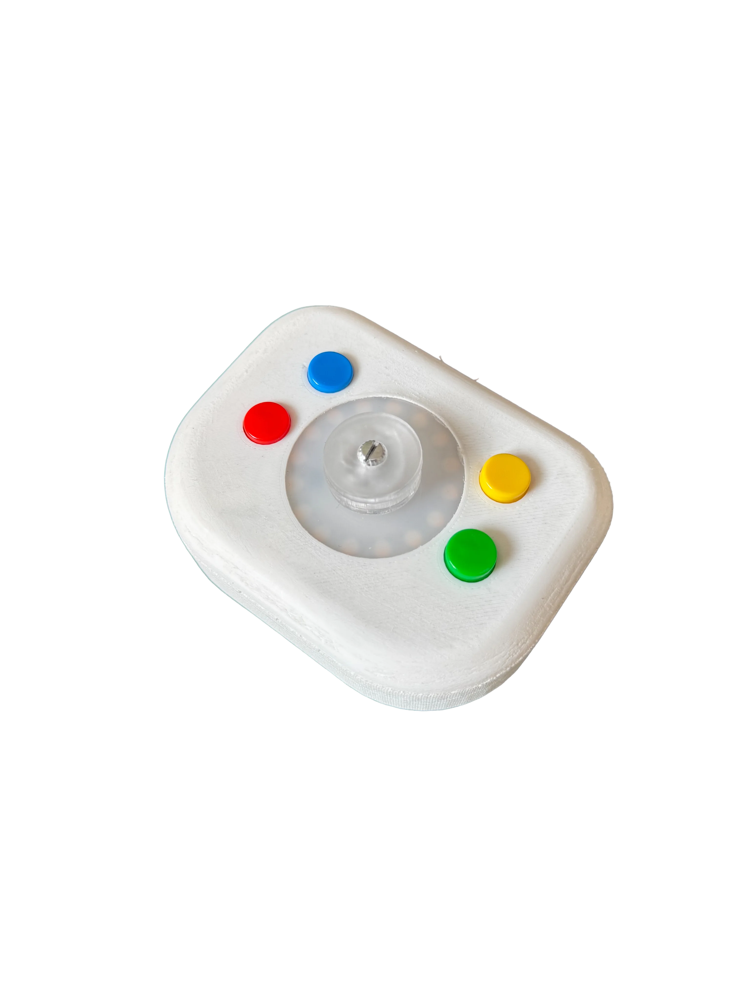

LOOOOPS
originally built as a two-sided conversation between hardware and software, LOOOOPS included a toy-like interface for creation that encouraged musical play. viewers could add drum sounds to the circular path via the controller, different lights would represent their beat on the device, and after pressing play a p5.js sketch brought their music to life.

designed as an exploration in play, interactivity, and low-stakes creation, LOOOOPS saw great success in it's first showing. now it has been reconfigured, with new visual libraries, more patterns, additional sounds, and a whole new interface. this version forgoes the interactive controller for a more contemplative, meditation on autonomous creation and moves the needle forward for future LOOOOPS iterations.